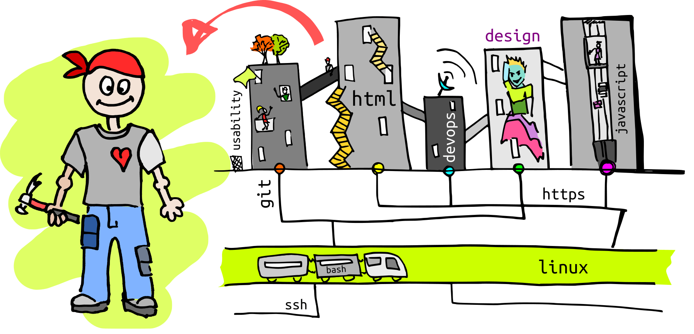
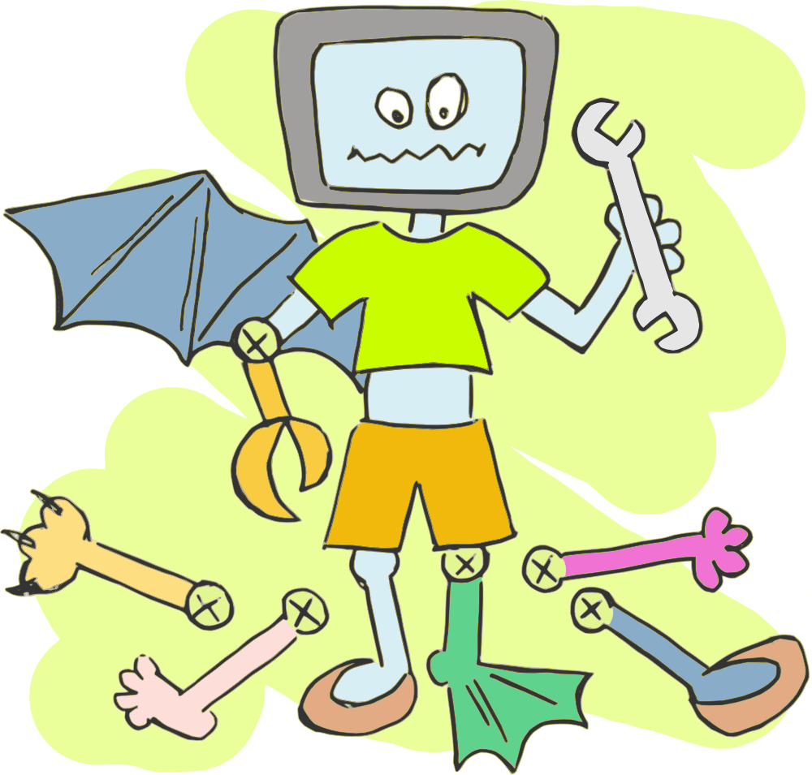

Who is an IT-volunteer?
It’s a person who has the technical knowledge and appeal to it for the benefit of social initiatives.

The most necessary technologies
- For volunteers-programmers: html, javascript, android, css, php, wordpress, ssh, git, drupal, framework, linux, apache, mysql, java, gulp.
- For designers: Adobe Photoshop, gimp, Adobe illustrator, CorelDraw, Inkscape, Adobe InDesign, Blender, Scribus.
- For translators – it is the English, Belarusian and Russian languages.
- For the security consultants - gpg, veracrypt, keepass, enigmail.
Particular and the most important skills for today are a needs analysis, a preparation of technical tasks for inventions of social initiatives and organizations.

What are the most often tasks?

- To create or restore sites (front-end, back-end, dev-ops).
- To draw the site header, logotype or poster.
- To create a mobile application or to write an module or plugin
How do we work with volunteers?
- After a volunteer filled the application form
- We connect with him/her and refine the experience.
- After we find the appropriate task from the existing.
- Connect the volunteer with a social initiative and help to establish contact.
- Look after the work, according the results make a report and write a recommendation.
- Working according the scheme described below…

What a volunteer receive from the cooperation with an initiative?
- New contacts with interesting people who make our society better.
- Real and – the most important – useful projects for an IT-beginner to fill his or her resume (CV) with.
- Social knowledge which a skilled programmer would improve, for example, when he or she gets to know what is the concerning of the social organization.
- Raising authority and karma of the volunteer after well-done task inside the IT volunteers’ community.
- Recommendation and gratitude, including the name of the volunteer on the finished product.